個人簡介
| 姓名： | 林宇恩 Jack Lin |
| 就讀學校： | 國立基隆高級中學-數理實驗班 |
| 專長： | 自然組專長:Python、STEAM專題 社會組專長:國語文字音字形、國學相關領域 |
| 申請校系： | 國立清華大學-材料科學工程學系 |
| 特殊經歷： | 1.2023第四屆台灣科學節:尬科學-科學演示擂台賽 全國佳作 2.全國高級中等學校閱讀心得寫作比賽 高二組 優等 3.全國高級中等學校小論文寫作比賽 高二組 甲等 4.基隆市國語文競賽-字音字形 高中組 特優第五名 5.基隆市環境知識競賽 第十三名 6.國立臺灣海洋大學藍海拾貝多元發展課程 7.2024海洋專業人才培育論壇 8.淡江大學水質分析實驗課程 9.國立臺灣海洋大學 APCS基礎網頁程式設計 課程 10.國立臺灣海洋大學 電腦視覺 課程 11.國家科學及技術委員會-2023台灣科普環島列車 |
我對綠能與材料具有相關研究熱忱。
同時也對人工智慧與程式設計具有高度興趣，曾利用 Python 開發 AI 視覺程式進行手部動作偵測，期望嘗試透過科技處理生活瑣事。
個人自傳
我是林宇恩，曾就讀於國立基隆高級中學數理實驗班，屬於第二類組(理工)。從小就充滿著好奇心的我，對於新奇的事物都會感到有興趣。
在高中二年級時，曾參與國立臺灣海洋大學所舉辦的藍海拾貝多元發展課程(大學實驗室先修課程)，進行燃料電池的製作與研究。
綠能發展是現今的一個趨勢，而趨勢同時也力求創新與多變，為了求新求變往往需仰賴材料工程，於是我對材料工程領域開始有了濃厚的興趣。
想要藉由就讀材料科學工程學系，進行加深將廣的學習與研究，拓展自己的視野。
我從高中開始接觸程式設計，對於人工智慧與科技應用產生濃厚興趣。在學習過程中，我透過自學與課程練習逐漸熟悉 Python 程式語言，並嘗試將 AI 視覺技術應用在手部動作辨識專題中，希望能透過科技協助處理生活瑣事。
所謂「坐而言，不如起而行」，與其坐在課桌椅前，還不如在實驗室裡做研究顯得更加的充實。
在高中求學過程以來，除了藍海拾貝課程外，我也參與了多項校外競賽與活動。如:參與國立臺灣科學教育館所舉辦的科學演示擂台賽時，首次培養了我在眾目睽睽之下進行發表的能力。
參與基隆市環境知識競賽時，在培訓的過程中學到了許多環境知識與議題。
而藍海拾貝課程與「2024海洋專業人才培育論壇」則讓我探討了能源對於氣候與環境議題的關聯，並向大家發表如何利用能源，來改善環境與氣候議題。
最後則是「全國高級中等學校小論文寫作比賽」的參與，過程中培養了資料彙整與分析討論的能力。
當時這些活動的參與，都培養了讀大學所需要的能力。
未來希望在研究所持續精進材料科學工程與綠能發展，同時結合人工智慧領域，培養解決問題與創新應用的能力。
學習歷程
原本，我只是普通班的學生。雖然老師已有事先告訴我，就讀數理班之後，相較於普通班，課業壓力會很大。但是我接下了這困難的挑戰，也想要多多參與特殊活動的體驗，這麼不可多得的機會，為何要浪費呢?
除了許多特殊活動，也有許多特色課程，其中最特殊的莫過於參與國立臺灣海洋大學所舉辦的「藍海拾貝多元發展課程」。在高一下開始32個小時基礎課程。
不僅讓我們學習更多元的知識，也得以發現自己對特定領域的興趣。高二上時，我進入了海大-輪機工程學系 張宏宜教授的實驗室，在研究生的帶領下，進行超過100小時的專題研究。
除了研究室專題，我也嘗試撰寫小論文並予以投稿。過程歷經許多困難，當我為此煩惱不已時，幸好在課程中得到了教授的晤談。
當時我認為雖然這是一門必修的特色課程，但這也是一個可遇不可求的學習機會，我一定要好好把握，並做出一個成果。如果錯過了，也許就沒有下次了。
我心想:「既然已經決定要做這件事了，那就要認真做、做到好」。在晤談之後，教授同意我在課餘閒暇時間於實驗室中進行研究。
"...... Failure is not terrible, all that you need to do is find the reason for it, and overcome it. ......”
(……失敗並不可怕，你只需要找出原因並克服它就好了……)這是在實驗室中的外籍學長對我說過的話。
雖然小心謹慎是好事，但也是因為這份小心所帶來的緊張，造成了電極被外接導線撕裂的意外，一份樣品就這麼損壞了。
我呆站在爐子前面，心想:「怎麼會這樣……已經是最後一哩路了……」，不知該如何是好。
慶幸那位外籍學長所說的那句話點醒了我，我想起了我曾答應過我自己「做到完、做到好」的承諾。
整理完思緒後，針對該樣本的部分重新來過也沒關係，「做到完、做到好」，最終成功完成研究成果。
也因此讓我之後有機會可以參加跨國性的「2024海洋專業人才培育論壇」，並以全英文進行發表。
專題作品
2024海洋專業人才培育論壇-發表內容與簡報
Hello ladies and gentlemen. Today my topic is about the efficacy of Solid Oxide Fuel Cells by processed coating-Nickel under different temperatures and explore the relationship between energy and climate issues.
The ocean is closely connected with our lives. On Earth, the greenhouse effect is a normal phenomenon which can keep the temperature around the world. But too much greenhouse gasses will make it get into global warming then that will cause more terrible problems. Nowadays, climate change is an important issue with no doubt for everyone to face. In the millennium, 189 countries signed the MDGs, promising that they would fulfill those goals. However, the climate change is getting worse than before, so the replacement is the SDGs. In our life, we can’t live without any kind of energy. Traditional energies such as oil and coals that cannot be renewable. They not only have an exhausting day, but it also causes air pollution. Some people may think that traditional energies cause pollution, why not use nuclear energy? It does not cause any pollution. That’s right, but it can cause more serious problems. For example, the damages of radiation. In recent years, some technology companies are developing renewable energies.FC is the one kind of renewable energy that they are developing. So my topic about SDGs is Goal 7 - affordable and clean energy. I want to use technology to improve current environmental problems.
These are my contents, then I will follow these directions to make a publication.
Nowadays, the summer is hotter than before. That's why?When you feel hot,you will use air conditioners. In the meantime, burning the coals as a kind of energy, the excess greenhouse gasses will lead to global warming, so the temperature is risingp. If the cycle is duplicated again and again, not only do you feel hot but also the icebergs melted. Moreover, the sea level is rising, threatening our habitat.The 97% of water on the Earth is seawater. Only 1% is plain water that we can use directly. Most of the plain water is ice. If the sea level is rising, our groundwater will be salinated, so the plain water will decrease, too. In the 20 Century, the sea level has risen by approximately 20 centimeters. We forecast that the sea level will rise to 50 centimeters during the 21 century. Until AD 2300, the sea level will have risen by approximately 2 meters. We know that the climate is changing.
If the excess carbon dioxide melts into the ocean and leads to the ocean acidification which will hurt some creatures’ shells and bones. As for corals, getting white is an obvious phenomenon because of global warming. So we need some renewable energies.In other words, we need some clean energy.
One kind of renewable energy is FC. It is like a power generator. But it doesn't save any energy. In fact, it is a kind of energy converter. You just need to supply enough fuel such as hydrogen or hydrocarbon gasses, it can keep working.
In recent years, transportation that uses electricity is developing. Such as Tesla, it uses FC technology. Let's take a look at its principles. First, fuel and air get in then become ion by catalysis reaction, so the electricity is brought. Last, excess fuel and unused gasses go out. In this way, the product is only water. Compared with traditional energies, FC is more friendly to the environment.So I want to learn some knowledge about renewable energies to solve the environmental problems.
I made three samples of FC and conducted some experiments for them. One is to measure the efficacy of the original sample under different temperatures. Then the coating-Nickel ones are used to compare their efficacy with the original sample under the same temperatures. As for coating-Nickel samples, one is coated for 5 mole proportions, and the other one coated for 10 mole proportions. My range of measurement is 600~800 degrees Celsius. If we can get higher energy, not only can we reach the goal of environment-protection but also improve our life quality.
According to the three graphs, we can know that higher the temperature, higher the efficiency. As for samples, the non-coating-Nickel is the best one.
The advantages of FC are lower pollution and high efficacy. Moreover, it has high service life expectancy and many choices of fuel. But its operating temperature is too high to be universal in our life. Then the cost is too high on the storage of hydrogen, either.
Melted icebergs can lead to influence of ocean currents. Because of that, it may cause extreme climate. Have you ever watched a movie, named “The Day After Tomorrow”? The principle behind is the weakening of the Thermohaline Circulation although the movie is exaggerated. In the climate system, there are many positive and negative feedbacks in the operation of the climate system. Either the former or the latter may drastically change the earth's climate. Well-known scholar W. S. Broecker thinks that global warming may weaken the Thermohaline Circulation and even disappear. Which will reduce the amount of heat transmitted to high latitudes, causing high latitude areas and even the world to enter a cold climate. At first glance, it seems to retard global warming, but in fact it does not. Because the influence of the cooling effect is greater than the warming effect so it will instead cause more severe climate changes. W. S. Broecker called this mechanism "Achilles Heel" of the climate system, which means that small changes may lead to large changes in the climate system, or even rapid changes. That’s why? The temperature of the ocean is rising, the solubility rising, too. But there are no more salts melted in the ocean, the ice on land melted instead, causing the salinity to reduce. So the velocity of Thermohaline Circulation slows down. To retard climate change, we need to develop renewable energies more quickly.
In the future, the development of medium temperature FC may be an important issue. In the meantime, we need to try to decrease the cost of the storage of hydrogen and increase productivity of hydrogen. I think we can get hydrogen through the ocean.
Climate change is a global issue, when we face the situation, all that we need to do is try to slow down the speed of it, and make some adjustments in our life.
If FC can be universal in our life, when this goal is reached, I think the speed of climate change may slow down.
Thanks for listening, ladies and gentlemen.
--------------------------------------------------------------------------------------------------------------------------------------------------------------------------
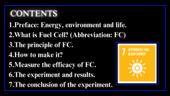
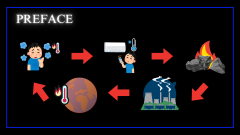
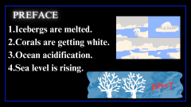
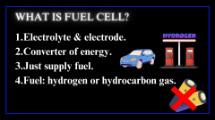
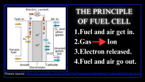
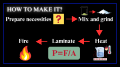
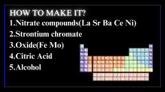
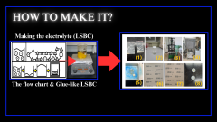
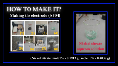
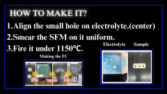
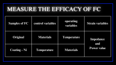
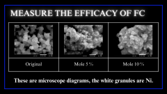
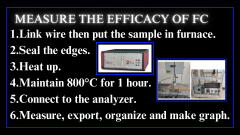
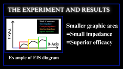
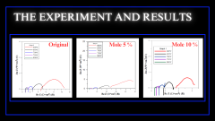
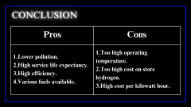
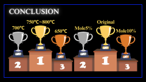
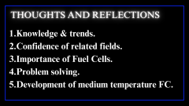
競賽成果
(1)國立臺灣科學教育館「2023第四屆台灣科學節:尬科學-科學演示擂台賽」
(2)國立臺灣科學教育館「2023第四屆台灣科學節:尬科學-科學演示擂台賽」 全國佳作
(3) MATH KANGAROO TAIWAN 高二參加獎
(4)全國高級中等學校閱讀心得寫作比賽 二年級 優等
(5)全國高級中等學校小論文寫作比賽 二年級 甲等
(6)基隆市國語文競賽-字音字形 高中組 特優第五名
(7)基隆市環境知識競賽 第十三名
未來規劃
| 階段 | 課內 | 課外 |
| 短期 | 1.繼續努力學測 2.維持學校段考 |
1.組合模型或樂高、讀課外書 2.和同學一起打球(Ex.排球) 3.考取多益證書-目標700分 4.增進電腦設備操作能力 (Ex.繪製圖表、整理資料、設備簡易修復、遠端操控) |
| 中期 | 大學一年級: 1.培養數學與英文能力 (向上提升並精益求精) 2.增進物理與化學的能力(向上提升) 3.認真修習選修與必修的學分 大學二年級: 1.提升解決問題的能力 (發現並動手解決) 2.提升資料分析能力 (Excel操作、圖表繪製軟體操作 Ex.Grapher 5) 3.認真修習選修與必修的學分 4.複習大一所學 大學三年級: 1.畢業論文撰寫籌備 (主題發想、評估可行性) 2.認真修習選修與必修的學分 3.複習至大二所學 大學四年級: 1.針對論文主題進行實驗/研究 2.撰寫畢業論文 3.認真修習選修與必修的學分 4.複習至大三所學 5.準備考取研究所 |
1.累積服務學習時數(60小時) 2.參加社團活動 2-1.西洋棋社 →對西洋棋有高度興趣 →有機會想參與比賽 2-2.象棋社 →對象棋有高度興趣 →曾有參與經驗 2-3.桌上遊戲社 →曾有參與經驗 2-4.魔術社 →曾有參與經驗 3.保持優良在校成績，申請獎助學金 4.修習跨領域學分學程 5.參與校內外發表會 6.考取英檢證書(依系所規定) |
| 長期 | 1.統整四年所學 2.就讀貴校研究所進行更深入的研究 |
1.加入研究團隊 2.參加科技展覽 3.參加相關學術研討會 |
未來希望深入學習人工智慧與資料科學，並持續將 AI 技術應用於社會議題，讓科技能真正幫助更多人。